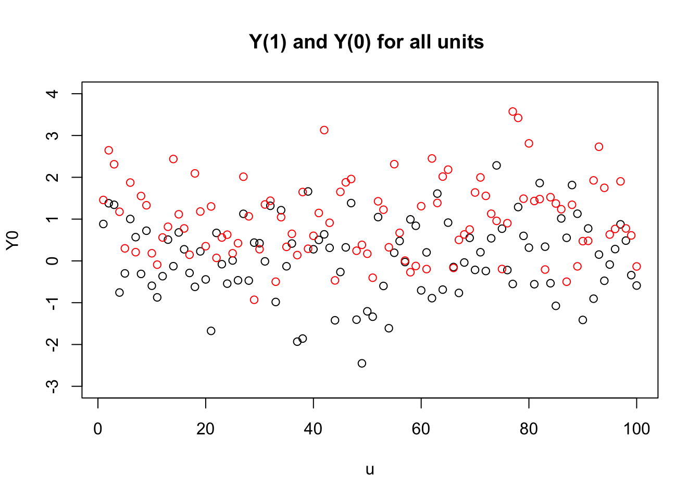
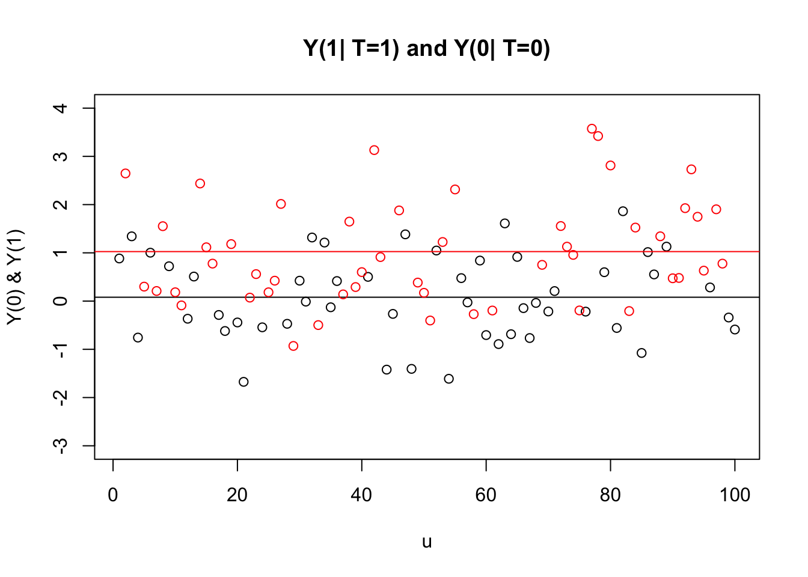

11 Causal Inference
The Rubin causal model is based on the idea of potential outcomes. For example, a person would have a particular income at age 40 if they had attended college, whereas they would have a different income at age 40 if they had not attended college. To measure the causal effect of going to college for this person, we need to compare the outcome for the same individual in both alternative futures. Since it is impossible to see both potential outcomes at once, one of the potential outcomes is always missing. This dilemma is the “fundamental problem of causal inference.”
11.1 Potential outcome framework
Thought experiment
Let’s assume we want to know if a particular intervention/treatment $D$ (like job loss) caused a particular outcome $Y$ (AFD vote propensity)
The variables job loss $D$ can take two values: 1 if the respondent did lose the job and 0 otherwise
The variable AFD vote propensity $Y$ is measured as a standard normal variable (that could be a continous survey measure)
In this thought experiment, we also assume that we know the potential outcomes for each individual
Our experimental sample of interest are $N=100$ German citizens $u$ drawn from the population of all citizers that are eligble to vote
In an ideal experiment we would observe the vote choice under job loss or not and compute the difference to get the causal effect
Lets simulate this setup in R:
N=100
u = seq(1:N)
Y0 = rnorm(N)
Y1 = rnorm(N) + 1
D=1:100 %in% sample(1:100, 50)
yl = "Y(0) & Y(1)"# Plot Potential Outcomes for each unit
# Library to resize plot
library(repr)
plot(u, Y0, ylim=c(-3, 4), xlim=c(1,N), xlab="u")
lines(u, Y1, type = "p", col="red")
title("Y(1) and Y(0) for all units ")
options(repr.plot.width=4, repr.plot.height=4)# Plot Potential Outcomes for each unit and take mean for treatment and control
plot(u[D==0], Y0[D==0], ylim=c(-3, 4), xlim=c(1,N), main = "Y(1| T=1) and Y(0| T=0)", xlab="u", ylab=yl)
abline(h=mean(Y0[D==0]))
lines(u[D==1], Y1[D==1], type = "p", col="red")
abline(h=mean(Y1[D==1]), col="red")
options(repr.plot.width=4, repr.plot.height=4)